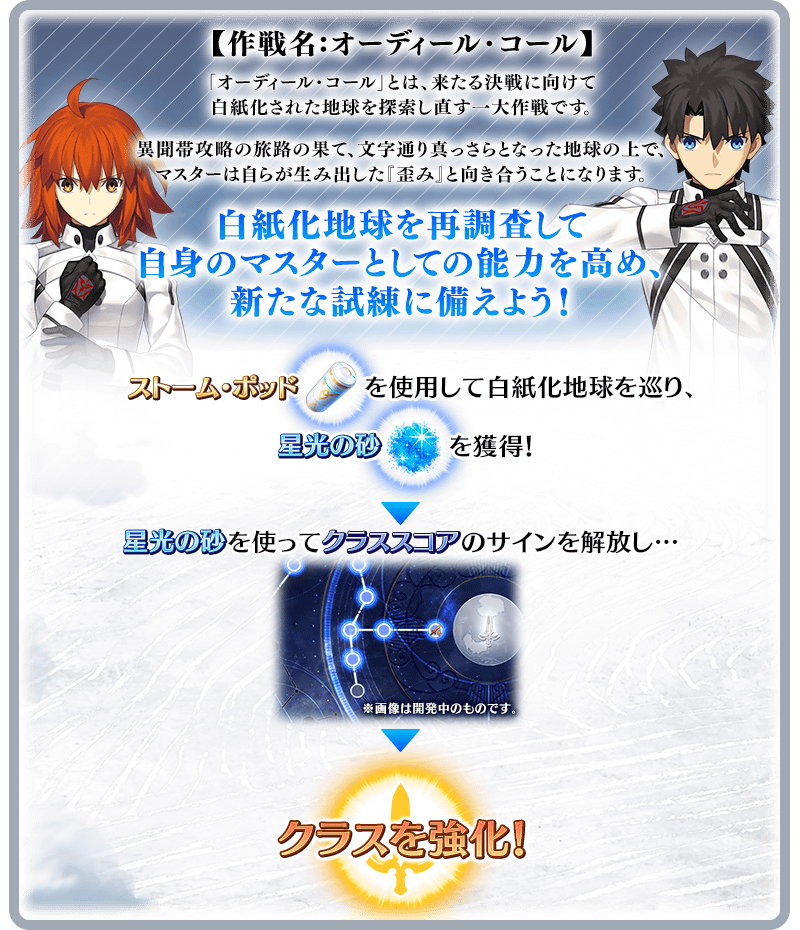
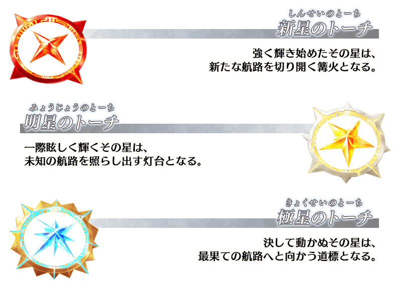

結束於第七異聞帶的作戰，等待新・迦勒底的是新考驗。
為了導正自已『扭曲』的旅途而巡遊白紙化的地球，作戰名『應盡職責的呼喚(Ordeal Call)』開始行動。
※本頁面皆為開發中圖片。會有與實際圖片相異的情況。
◆開幕預定日◆
2023年6月7日(三)～(預定)
◆開放條件◆
通過奏章序幕(プロローグ) 「應盡職責的呼喚 序」後開放。
※不需要通過亞種特異點(從Ⅰ到Ⅳ)、主線關卡第2部 第5.5章、第2部 第6.5章。

使用「航艦飛行器」再調査白紙化地球！
「應盡職責的呼喚」中，變得可自由地再調査白紙化地球上。
在白紙化地球上會接續出現新的自由關卡和高難易度關卡。
※關於關卡的詳情，請確認預定2023年6月7日(三)公開的公告。
想挑戰白紙化地球上的自由關卡，除AP外必須要新道具「航艦飛行器」。
航艦飛行器的獲得方法
「航艦飛行器」做為「登入獎勵」可入手每天3個。 ※只限通過奏章序幕(プロローグ) 「應盡職責的呼喚 序」後，通過自2023年6月7日(三)開放的「應盡職責的呼喚 開幕關卡」的御主才是對象。
「航艦飛行器」的最多持有數到9個す。
請注意在每天的初次登入時成為10個以上的情況，無法領取超過的數。
◆登入獎勵期間◆
2023年6月8日(四) 3:00～(預定)
◆登入獎勵對象◆
通過奏章序幕(プロローグ) 「應盡職責的呼喚 序」後，通過自2023年6月7日(三)開放的「應盡職責的呼喚 開幕關卡」御主對象
為了準備好面對新的試練，可提高做為自身御主能力的強化各職階新功能「職階刻痕」登場。
「職階刻痕」由稱為「痕記」多個格子所構成。
「職階刻痕」依職階區別合計有9個，解放想強化職階的「痕記」後可賦予對象職階的全部從者各式各樣的效果！
◆開放預定日◆
2023年6月7日(三)～(預定)
◆開放條件◆
通過奏章序幕(プロローグ) 「應盡職責的呼喚 序」後，通過自2023年6月7日(三)開放的「應盡職責的呼喚 開幕關卡」御主對象
職階刻痕的解放方法
痕記的解放
想要痕記的解放必須要QP和既存素材再加上新道具「星光之砂」。
「星光之砂」可靠攻略白紙化地球上的關卡來入手。
痕記無法自由選擇解放，只限中央的職階符號或連繫已解放痕記與路線的痕記才能解放。
巡遊枷鎖的解放
一部份的痕記會有透過巡遊枷鎖封印的路線前方，無法在初期階段中解放。
想要巡遊枷鎖的解放必須通過特定的任務再加上新道具「火炬」。
「火炬」對應階段有「新星火炬」「明星火炬」「極星火炬」的3個種類。
「火炬」可靠攻略白紙化地球上的高難易度關卡和通過任務來入手。

從再探索白紙化地球開始行動的「應盡職責的呼喚」。
由此作展發展的『奏章』中，將被編織出至終局旅途的轉折點。
其最初的試練『奏章Ⅰ』預定在2023年6月中旬開幕。
以御主的新助力「職階刻痕」為首，請務必期待新的發展！
其他還有期間限定『「應盡職責的呼喚」開幕前夕宣傳活動』等的情報公開中！
關於詳情，請自下述橫幅確認。
■『「應盡職責的呼喚」開幕前夕宣傳活動』詳細情報

■『「應盡職責的呼喚」開幕前夕Pick Up召喚』詳細情報